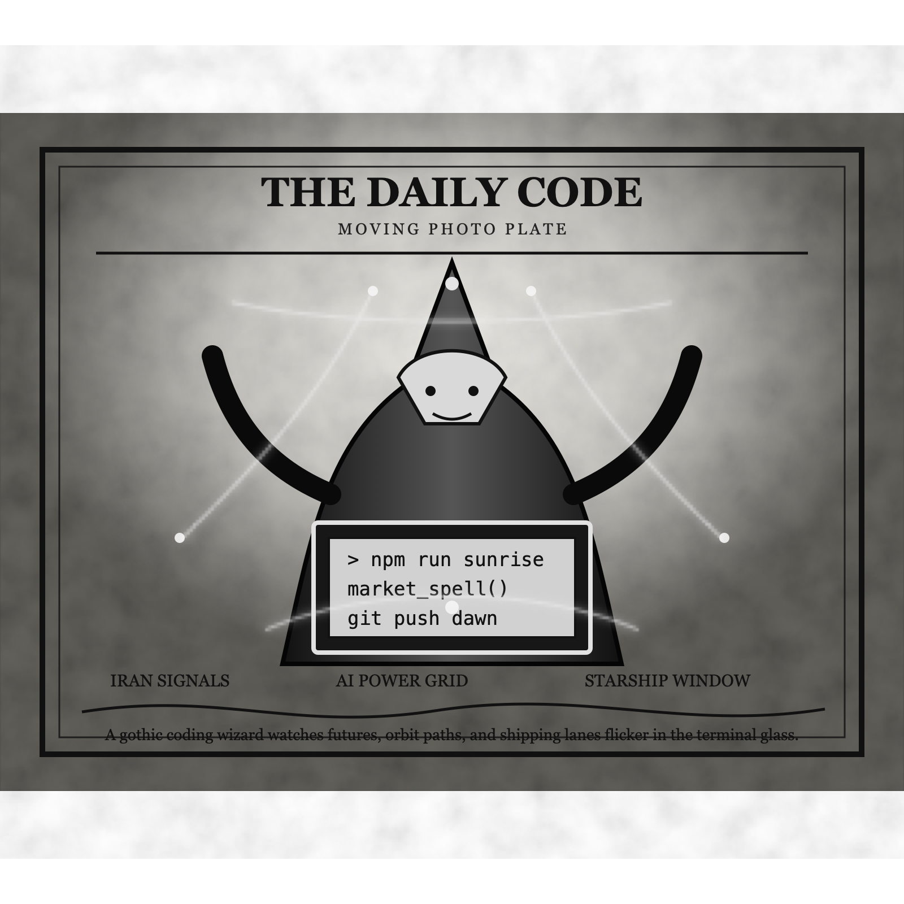

Morning Edition
6:00 AM CDTFinance & Markets
AI Wobble Hits Futures While Oil Holds the Line
U.S. stock futures softened this morning as Asian chip pressure revived worries about the AI trade, even while oil stayed near the mid-$80s after the latest Iran escalation. The market spell is mixed: cooler inflation keeps rate fear contained, but semiconductors, energy risk, and earnings season are all pulling on the same thread.
— Source: Wall Street Journal markets live coverage, July 16, 2026IPO Window Stays Open for AI Infrastructure
Axios says U.S. IPO proceeds reached $141.2 billion by mid-July, just shy of 2021's record, with AI-linked infrastructure and mega-listings doing much of the lifting. That is good news for bankers and founders, but it also means the public market is now underwriting a very specific belief: data-center demand and AI capex must keep compounding.
— Source: Axios on U.S. IPO proceeds, July 13, 2026Private Equity Trades Volume for Conviction
PwC's midyear private-equity outlook says U.S. PE deal volume fell 34% in the first half while average deal size rose nearly fourfold. Sponsors are still finding ways to deploy, but the pattern is narrower and more selective: fewer bets, larger tickets, more continuation work, and a premium on assets clean enough for a reopened IPO path.
— Source: PwC private equity deals outlook, July 2026World & US
U.S.-Iran Conflict Spreads North
AP reports U.S. strikes expanded into northern Iran and disabled a ship accused of trying to run the blockade, while Iran fired on Bahrain, Jordan, and Kuwait. The crisis is now a security, energy, and logistics problem at once: every headline around Hormuz is also a headline about fuel prices, shipping insurance, and market confidence.
— Source: AP on expanded U.S. strikes in Iran, July 16, 2026Heat Dome Keeps the Overnight Risk High
A stubborn U.S. heat dome is pushing dangerous temperatures through the week, with many records showing up as overnight lows. That is the health warning hidden in the weather map: people, buildings, and grids do not get a clean cooldown window, so the stress accumulates quietly.
— Source: AP on the U.S. heat dome, July 14, 2026New York Pauses Large Data Centers
New York imposed a one-year moratorium on large data centers while it studies energy, water, climate, and noise rules. The state has turned AI infrastructure into a public-policy debugging session: compute is no longer just a cloud decision, it is a grid and neighborhood decision.
— Source: AP on New York's data-center moratorium, July 14, 2026
The Thursday Scrying Lens: a gothic code-mage watches futures, orbit paths, heat maps, and shipping lanes flicker through the terminal glass.
"A good Thursday build protects the hot path, names the risk, and lets one clear commit turn fog into motion."— The Developer's Almanac
Sagittarius Horoscope
Justin, today's Sagittarius chart is a classic maintainer's omen: the morning may feel slow, delayed, or noisy, but the evening favors organization and meaningful progress. The Rat overlay adds curiosity and quick social intelligence, with a warning to keep commitments light enough that useful surprises can get through. Developer translation: do not try to repay all technical debt in one heroic sweep. Pick the one stuck thread, write the clarifying note, make the reversible patch, and let disciplined communication do the magic. Lucky hex: #334155. Lucky command: git status && npm test.
Tech, AI, Space & Crypto
-
AI's Power Bill Becomes Inflation Talk
AP says the 2026 AI buildout could exceed $700 billion and is feeding price pressure through chips, memory, electricity, and devices. The infrastructure lesson is blunt: inference is not abstract. It shows up in power markets, consumer hardware, rate policy, and CFO dashboards.
— Source: AP on AI buildout and inflation pressure, July 13, 2026 -
Starship Flight 13 Has a Payload Job
SpaceX is set to attempt Starship Flight 13 today from South Texas, with a plan to deploy 20 upgraded Starlink V3 satellites. The test is still about reuse, descent, and vehicle data, but the payload work makes the mission feel less like spectacle and more like the first draft of a logistics product.
— Sources: Space.com on Starship Flight 13, July 15, 2026 -
Bitcoin Retakes the $65K Watchtower
Investopedia says Bitcoin clawed back above $65,000 before slipping around the line, helped by cooler CPI, risk-on positioning, ETF inflows, and renewed crypto-legislation hopes. The move is constructive, but still conditional: Fed signals, ETF demand, and geopolitics are the three daemons to watch.
— Source: Investopedia on Bitcoin and crypto policy hopes, July 16, 2026 -
Robotics Gets a Unicorn Round
Axios reports Walden Robotics raised $300 million at a $1.1 billion valuation, with Toyota, Deviation Capital, Nvidia, Boeing, Samsung Ventures, CoreWeave Ventures, and others joining. The market is still hungry for physical AI when the story links software, labor, logistics, and real-world automation.
— Source: Axios Pro Rata on Walden Robotics, July 15, 2026 -
Thursday Build Note
Today's best engineering move is to turn one vague risk into an observable one. Add the dashboard, cap the spend, pin the dependency, or write the test that makes tomorrow's work less mysterious. The spell is calm instrumentation.
— Source: The Daily Code desk, July 16, 2026
Active Reminders
- Test reminder from Nemu (Jan 29)
- Connect Nemu to Notion (Feb 1)
- Research VPN/proxy services for secure agent browsing (Feb 1)
- Create security OpenClaw bot (Feb 2)
- Plaid Integration Research (Feb 4)
- Build Oomi iOS and Android app to connect Nemu to data (Feb 15)